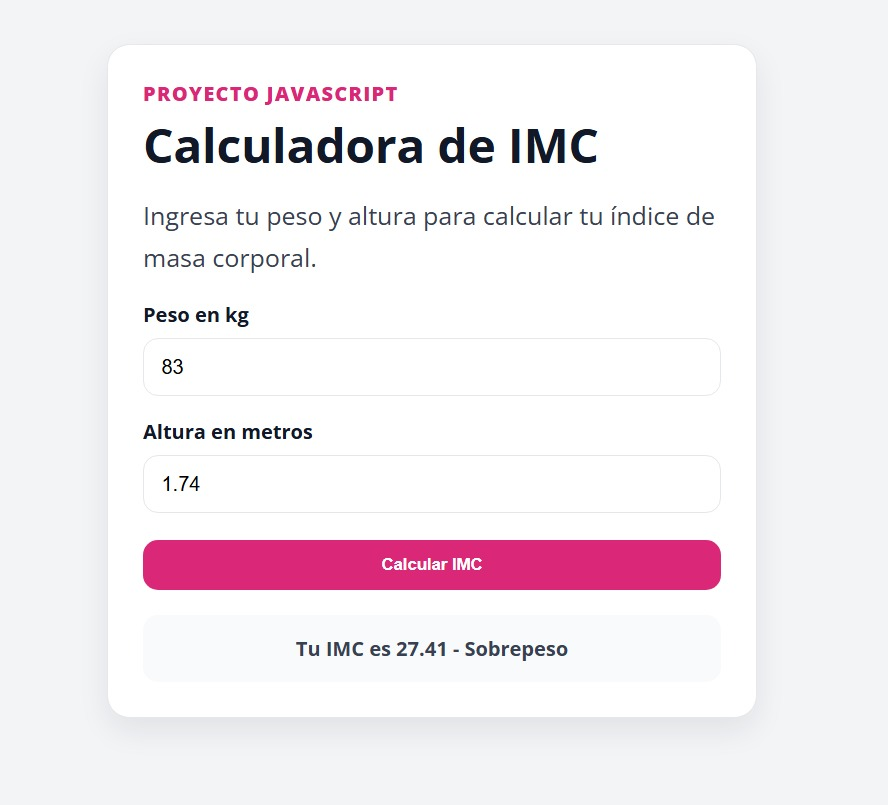
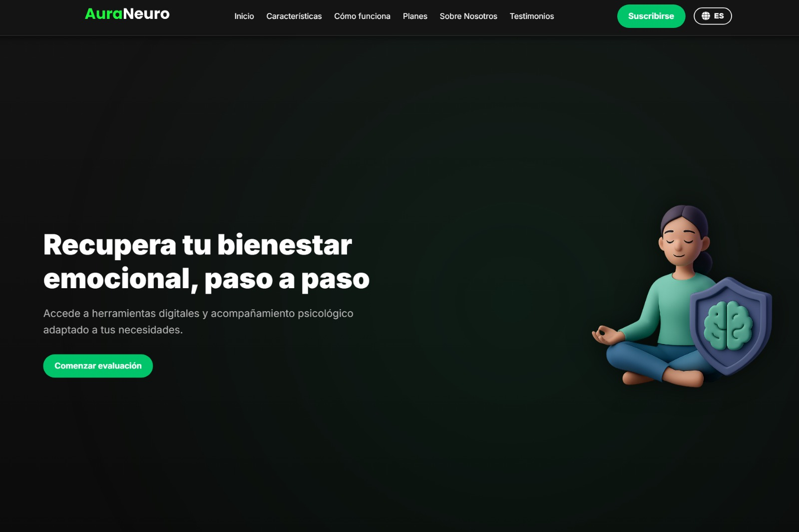

Calculadora de IMC
Aplicación web que calcula el índice de masa corporal del usuario y muestra su categoría según el resultado.
HTML
CSS
JavaScript
Ver proyecto
Mis proyectos
Proyectos desarrollados para practicar HTML, CSS, JavaScript y lógica de programación.

Aplicación web que calcula el índice de masa corporal del usuario y muestra su categoría según el resultado.
Landing page tipo blog sobre animes, desarrollada con HTML y CSS. Incluye tarjetas visuales, buscador, navegación por categorías y diseño oscuro moderno.

Landing page profesional desarrollada en equipo sobre bienestar emocional y neurología digital. Incluye carrusel, secciones informativas, planes, testimonios, diseño moderno y soporte multilenguaje.